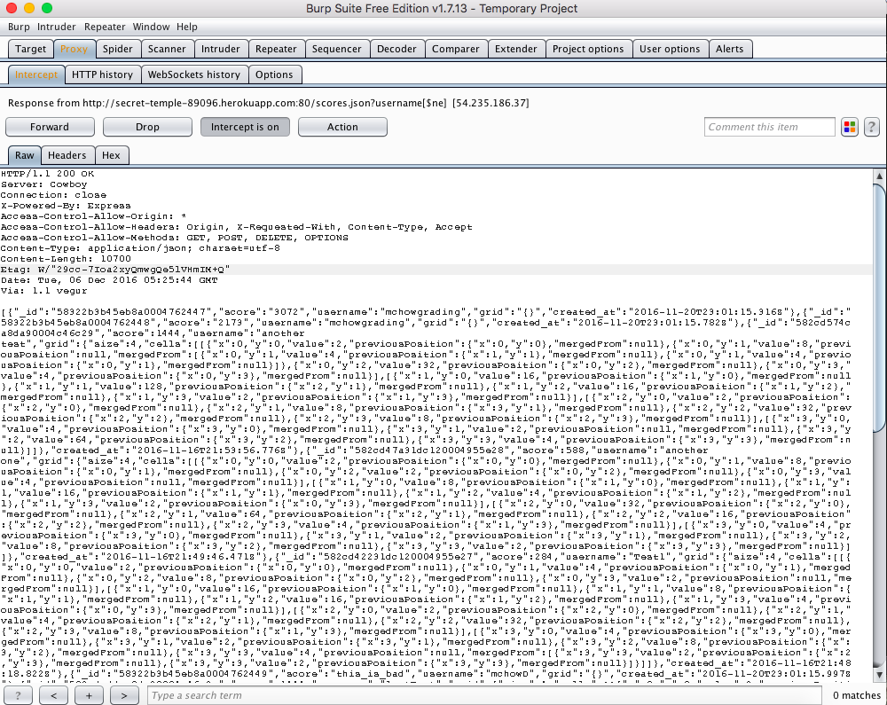
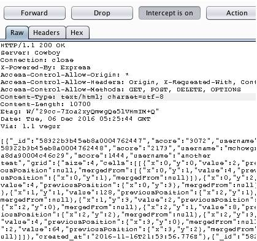

Security Analysis of 2048 Game Center
Introduction
This page documents the security risks and vulnerabilities of the game center of a modified version of 2048 created by Dokyun Kim, analyzed by Jeremy Su. When a game of the modified 2048 game is finished, it will collect a username, score, and grid state, and send it to the game center server, secret-temple-89096.herokuapp.com, via the "/submit.json" path to store it in a database of scores along with the time stamp of storage. The "/" path will display a leaderboard of scores of the modified 2048 games. To retrieve individual data including grid state, the "/scores.json" is available for the user to query a username and return any games played by that user.
Methodology
The first security risk would be malicious input by the user as users are free to enter data and affect anything they send and receive, so checking user and input validity is a hotspot for vulnerabilities. Because the game center is accessible universally rather than having users create personalized accounts with private information, all information is accessible given the user has the right information, so a must-have check would be information hiding. The only third-party tool used in this analysis was Burp Suite to act as a proxy.
Abstract of Findings
After thorough analysis of the infrastructure of the game center server, the following issues were found:
- All entries in the database used for the game center can be accessed without explicit knowledge of specific usernames. The security risk of leaking all game scores and grid states may seem insignificant; however, the moment important information is included in the database such as passwords, home addresses, payment methods, attackers can access everything.
- Users can directly alter the behavior of the central leaderboard hub at the "/" path of the server simply by finishing a game and setting their username as malicious programs that will execute when the game center shows. This can lead to a broken webpage, a redirection to malicious sites, or a display of offensive material that may turn away users.
- If the user plays the modified game through a proxy set up by attackers, these attacks can intercept important information such as the security configurations from the server and exploit more holes in the system. They can also ask users for private information through the mask of the game center and have their information stolen only to blame the game center.
Issues Found
Information Leaking
ISSUE: Database Injection/Sensitive Data Exposure
LOCATION: "/scores.json" path
SEVERITY: Medium - Although Database Injections are typically very severe, the type of database used with this game center only allows for searching queries in the exploit and offers no other functionality without direct access to the database. The only threat is therefore information being leaked to any user with the knowledge of the exploit and therefore should not be ignored since if private information is stored in the database, it can be accessed by malicious users.
DESCRIPTION: This vulnerability was found using the query string ?username[$ne] which finds all usernames not equal to nothing; therefore, all usernames are found along with their corresponding information.
As depicted in the code snippet above, the game server does not check the username that the user provides through the query string. The query username[$ne] is therefore able to be filtered through to find every entry in the database with the username key.
RESULTS: Below is a picture depicting the query string and every entry of the database (multiple users are displayed):

RESOLUTION: To fix this issue, it is recommended to sanitize and filter the input of the user's username of any special characters to ensure that the username is composed of alphanumeric characters. A sample solution is provided below:
XSS Vulnerability through the Client
ISSUE: XSS
LOCATION: "/submit.json" path
SEVERITY: High - The ability to have any script input by the user be run on the game center page has very high risks. Users are only restricted by their knowledge of scripting techniques to do whatever they want with the webpage such as dismantling it, displaying offensive material, sending requests to other websites, etc.
DESCRIPTION: This vulnerability can be seen if an attacker puts script code as his or her username from a finished game. When displaying the leaderboard of scores on the game center, the page will execute the script. This script can range from redirecting the page or completely breaking the webpage.
As depicted in the code above, the only check for the fields from the submitted JSON is that each field exists and has a value. It does not, however, check the content of the username which is directly inputted by the user. The username can therefore be script code and directly be displayed in the webpage.
RESULTS: Purposely putting some script as a username, the "/" path is redirected to another website:
Although this redirection to YouTube is harmless, the redirection can be to malicious sites such as virus-downloading sites and phishing sites. Below is a screenshot of the actual entries of the database. Comparing the two images, it is clear that some of the entries are cut off and not displayed due to the injected script.
RESOLUTION: To prevent this vulnerability, it is recommended to sanitize and filter the username, score, and grid fields given by the user when a game is finished as seen in the image below:

XSS Vulnerability through a Proxy
ISSUE: XSS
LOCATION: The app.all "/*" path that defines the headers for all paths in the web server.
SEVERITY: High - Setting the Access-Control-Allow-Origin to the wild card allows any domain to send and receive requests to the game center. This can leak numerous amounts of security configurations not intended for user viewing. All responses and requests can also be intercepted by proxies on "behalf" of actual users in which attacks can act like the actual game center and perform malicious activity. This is very concerning as this malicious activity can be seen as if the server itself was attacking the user which may lead to less user usage and blaming the server for malicious activity.
DESCRIPTION: This vulnerability was found by looking at the server source code. Allowing the server to accept requests and responses from any origin allows for interception of data. Below is a snippet of the code that sets the headers of all the paths on the server:
RESULTS: Because the server accepts requests from any domain, if a user were to play the game through a proxy, the proxy could view and alter responses from th server to the client to acquire private information in the guise of the server. Below are screenshots of a proxy set up by Burp Suite. The headers can be seen in plain site and can be exploited even further if attackers wanted to.

These headers can also be altered to the attacker's personal use. In this particular example, the content type was changed to return an html from the "/scores.json" path which returns a JSON:

Making this change made an XSS attack from the "/scores.json" path possible. In this particular example, script was put onto the page which prompts the user for a credit card to retrieve information. Another alert is used to show that this data was collected and could be sent to the attacker's site.
RESOLUTION: To fix this vulnerability, the header to be a wild card: *, must be changed so that only trusted sites have CORS access to the server. This can be achieved by verifying certificates of domains sending requests to the server.
Conclusion
This product contains a number amount of vulnerabilities relating to malicious users and stealing information from the database or actual users. This can be avoided by ensuring that requests in general sent to the server are valid which can mean sanitizing input but also ensuring that the domain is trusted. Since this server only contains scores from a game, the vulnerabilities are not extremely necessary because attackers cannot do much with simple usernames, scores, and grid states of the game 2048. If the website and server were to, however, implement private information such as payment methods, passwords, etc, then these vulnerabilities should be resolved to protect the private information of users.